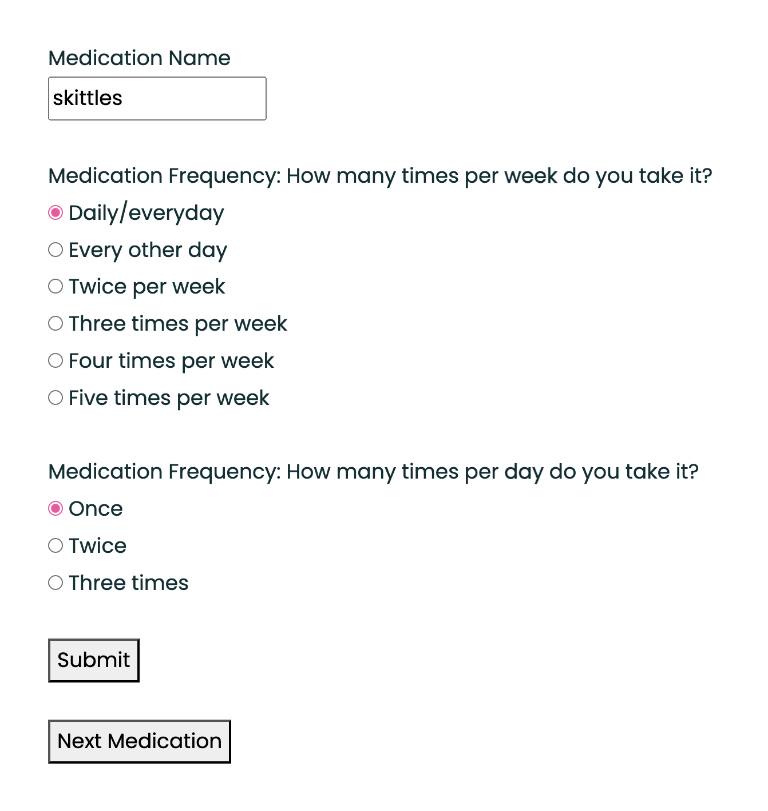
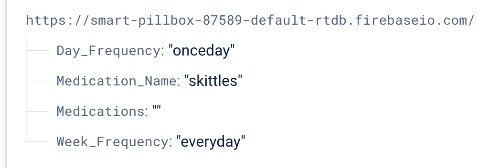
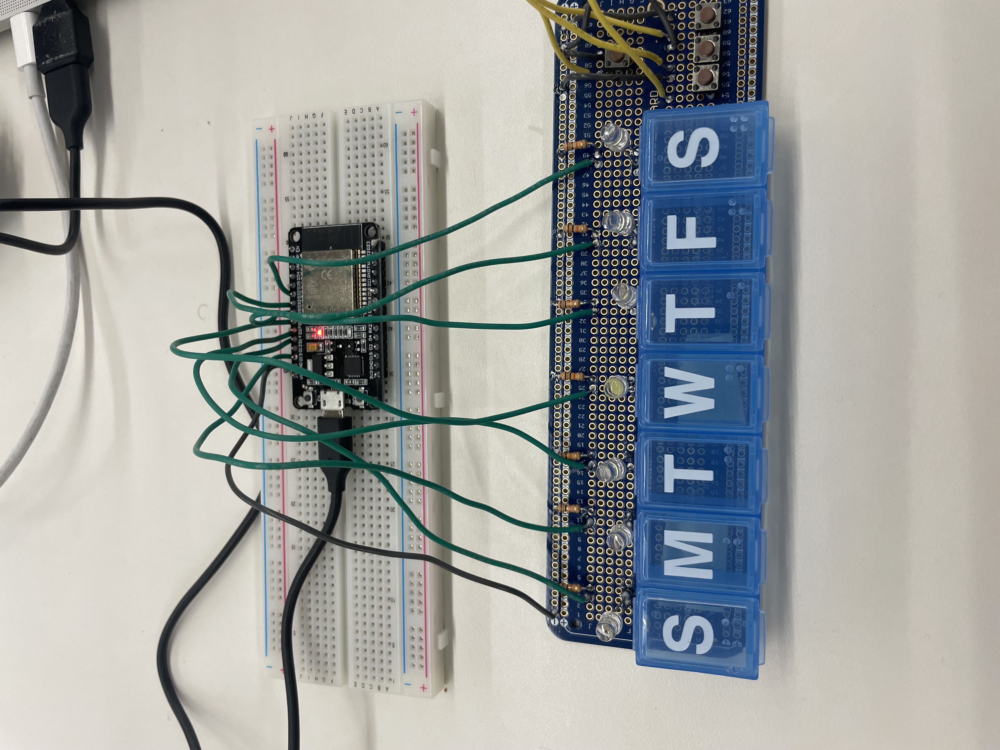

<div class="textcontainer">
<p class="margin"></p>
<h3>Final Project: Refill Guide Box</h3>
My final project is a smart pillbox that guides a user through refilling their organizer will multiple medications. See the demo video below!<br>
<div class="flexrow">
<video width="50%" autoplay muted>
<source src="/Users/kirafagerstrom/Documents/GitHub/ps70/07_outputs/demovid.MOV" type="video/mp4">
</video>
</div>
<h4>Read below for updates from throughout the process:</h4><br>
<h3 style="color:#e2165b";>Part One: Deciding on an idea</h3>
I decided to go with the Smart Pill Box idea to guide the user when filling their medication organizer. Here's the description from Week One again: <br>
A lot of smart pillboxes focus on reminding the user when to take their medications. My idea aims to make the other end of medication administration, filling the pillbox, easier. The idea is inspired by a couple of friends and relatives with chronic illnesses whose prescriptions change from month to month, making their medication schedules pretty complicated.
<br>
<br>
<h5><em><b>How it works</b></em></h5>
The organizer would look like a standard seven-day box, with each day divided into morning and night. It would sit on a base that puts lights under each compartment. At the beginning of each week, the user would input the instructions on the original bottle's label like "take 2 capsules every other day in the morning", either using buttons on the box or an interface on a computer/phone (maybe a website?). The corresponding compartments would light up based on the given schedule. Future iterations could include a reminder feature or an indication of how many pills to put in each compartment (i.e. the <a href="https://elliegrid.com/products/ellie-smart-pill-box">Ellie Grid</a>).<br>
<br>
<h3 style="color:#e2165b";>Part Two: Designing a box</h3>
<h4><b>CAD model</b></h4>
The first model I've made recapitulates a classic medication organizer design with 2 rows of 7 compartments for each day. Each compartment is a 3x3x3 snap-fit box that opens with a hinge. <br>
<div class="flexrow">
<img src="./first model.png" alt="cad model of a 14 dose pillbox" width="35%">
</div>
<p>
I'm not exactly sure how the electronic components will work or how they'll fit on the board, but I'm envisioning an LED either on the lid or on the outer edge of each box that turns on to indicate that a medication dose belongs in that box. <a href="./full box v2.stl" download>Here is the STL file of the design</a>.
<br>
<br>
<h4><b>Materials</b></h4>
PRUSA printer/filament<br>
Arduino<br>
PCB/protoboard<br>
LEDs<br>
Wires/connectors/resistors/circuit elements<br>
Web server<br>
<br>
<h4><b>Timeline</b></h4>
<b>After wifi/bluetooth week:</b> Design input system (~1-2 weeks)<br>
Based on input system and circuitry, adjust CAD of box (~ 1 week)<br>
Print box and assemble circuitry(~ 1 week)<br>
<a href="cnc.stl" download>Example CNC file for day labels on pillbox!</a>
<br>
<br>
<h3 style="color:#e2165b";>Part Three: Building a prototype</h3>
<h4>Minimum Viable Product</h4>
The pillbox idea has 2 main components: the actual box itself, which I'll probably 3D print, and the electronic input/output electronics. The 3D printing and Fusion designing will be pretty straightforward, so this week I decided to try out a super basic input/output circuit, since I anticipate the Arduino programming to be the most challenging part of this project.<br>
<br>
<h6><em>outputs</em></h6>
I started with an Arduino-based circut on the breadboard to control 7 LEDs (one for each day of the week), with the idea of expanding to 14 LEDs in my later ESP32 powered iterations (I was already almost out of digital pins on the Arduino with this version). The lights would turn on according to the frequency defined in the input.<br>
<br>
<h6><em>inputs</em></h6>
I'm starting very small with just 3 options for dose frequencies: everyday, every other day, and twice a week. Each option has a corresponding button. I don't think the final version will be button-based for input because it really limits the type of prescription regimens that you can input into the device, so Kassia suggested I try FireBase to store information about the user's exisitng regimens, allowing greater input options. To test that I could actually do the coding to make sure the lights turned on in multiple different ways, I stuck with the buttons for now. I added another button to reset/turn off the lights when the user is done filling one prescription. Eventually I want to use the capacitive pressure sensor or photoresistor inside each compartment to sense when pills are put in it and turn off the LED, but I'm still troubleshooting that and working on how to make the capacitive sensor sensitive enough.
<p class="margin"> </p>
<h6><em>Circuit and Code</em></h6>
Here is the circuit as I built it, and a TinkerCad illustration to clearly show the connections (resistors are 10 kOhms):
<p class="margin"> </p>
<div class="flexrow">
<img src="/Users/kirafagerstrom/Documents/GitHub/ps70/07_outputs/breadboard.jpeg" alt="breadboard with 7 LEDs and 4 buttons connected to an Arduino" width="45%">
<img src="/Users/kirafagerstrom/Documents/GitHub/ps70/07_outputs/tinkercadss.png" alt="illustration of breadboard with 7 LEDs and 4 buttons connected to an Arduino" width="45%">
</div>
<br>
And here is the annotated code I came to after much troubleshooting and learning about toggle and i in Arduino, and some chatgpt debugging help. Learning Arduino code is a highly recommended spring break activity. <br>
Some helpful sources: <a href="https://www.arduino.cc/reference/en/libraries/toggle/">Arduino toggle library</a>, <a href="https://forum.arduino.cc/t/use-a-push-button-as-a-toggle-switch/486589">Arduino forum</a>, <a href="https://forum.arduino.cc/t/how-to-toggle-led/508015/5">this Arduino forum</a>, <a href="https://forum.arduino.cc/t/creating-class-and-objects/997333">and the class and objects forum on Arduino</a>.
<iframe src=https://create.arduino.cc/editor/kfagerstrom/5158ec5c-90a0-4386-a4ba-6850a54af3fe/preview?embed style="height:510px;width:100%;margin:10px 0" frameborder=0></iframe>
It worked! Here's a live demo:<br>
<div class="flexrow">
<video width="50%" autoplay muted>
<source src="/Users/kirafagerstrom/Documents/GitHub/ps70/07_outputs/mvpv1.MOV" type="video/mp4">
</video>
</div>
This was great except it was pretty much just some LEDs and I needed a pillbox. So I transferred everything to a protoboard along with a 7-day pillbox (that CVS made). It's starting to look and work like (a very rudimentary version) of the real thing!<br>
<div class="flexrow">
<video width="50%" autoplay muted>
<source src="/Users/kirafagerstrom/Documents/GitHub/ps70/07_outputs/mvpv2.MOV" type="video/mp4">
</video>
</div>
It was super helpful to put everything on the protoboard so I can have an idea of how to design the box around the electronics in Fusion.
<h6><em>the vision</em></h6>
The vision is coming together, but there are many next steps to be taken. Next week for Wifi and Bluetooth I'll work on the advanced input versions, and I already found a couple tutorials on using an html website to control an Arduino. After or simultaneously with putting that together, I'll try integrating the ESP32 because I'll definitely need more than the Arduino's 13 digital pins. Using the capacitive sensor to sense pill presence seems like it will be the last part because it goes a little bit beyond the basic functionality of the pillbox. But the vision is always changing so we'll see what I'm thinking next week.
<h6><em>oscilloscope</em></h6>
The oscilloscope readings turned out to be very boring when I hooked it up the LEDs and buttons because all they were doing was turning on and off. But i got a reading of the on and off voltages shown below, and it was cool to zoom in on the wave at the exact moment of turning on and off:
<div class="flexrow">
<video width="50%" autoplay muted>
<source src="/Users/kirafagerstrom/Documents/GitHub/ps70/07_outputs/oscilloscope.MOV" type="video/mp4">
</video>
</div>
<p class="margin"> </p>
<div class="flexrow">
<img src="/Users/kirafagerstrom/Documents/GitHub/ps70/07_outputs/oscilloscope.jpeg" alt="picture of oscilloscope reading voltage" width="45%">
</div>
<p class="caption">oscilloscope reading at the moment the button was turned on, with the off voltage jumping up to the on voltage</p>
I think this will be much more informative with the capacitive sensor/pill sensors because the circuit will have a lot more complexity. And the variable input may have a cooler wave function.
<h3 style="color:#e2165b";>Part Four: Iterating</h3>
<h5>Iteration 2</h5>
This iteration, I replaced the physical input buttons with a website interface, giving the user a few more options and ability to choose the frequency within a day. I used the same strategy as the machine building and networking assignments to connect the website interface to a Firebase RTDB, which relayed commands to the ESP32, turning on the LEDs according to the inputted regimen. I used the same basic tutorials from networking week (from <a href="https://randomnerdtutorials.com/esp32-firebase-realtime-database/">RandomNerd</a> and <a href="https://nathanmelenbrink.github.io/ps70/09_networking/index.html">Nathan</a>). <a href="https://kirafagerstrom.github.io/ps70/13_finalproject/control.html">Here is the control interface website</a>, and below is a screenshot of the Firebase RTDB updating according to the website:<br>
<p class="margin"> </p>
<div class="flexrow">


</div><br>
<br>
Here's the updated wiring to the ESP32, where each LED is connected to D13, 14, 27, 26, 25, 35, which on the Dev Board have both input and output capability:<br>
<p class="margin"> </p>
<div class="flexrow">

</div>
Here is the ESP code, which I had some trouble with at first, but switched the class structures back to normal functions for easier decoding, and came up with this working code. I then expanded this to control 2 rows of LEDs, one for the morning compartments and one for the evening, and updated my html code for the control website to match this functionality. All 3 codes are below:
<br>
<b>Single Row Code</b>
<br>
<center><div style="code-box;overflow:auto;">
<pre><code>
//code for connecting to firebase/controls
//control website: <a href="https://kirafagerstrom.github.io/ps70/13_finalproject/control.html">https://kirafagerstrom.github.io/ps70/13_finalproject/control.html</a>
#include <Arduino.h>
#if defined(ESP32)
#include <WiFi.h>
#elif defined(ESP8266)
#include <ESP8266WiFi.h>
#endif
#include <Firebase_ESP_Client.h>
//Provide the token generation process info.
#include "addons/TokenHelper.h"
//Provide the RTDB payload printing info and other helper functions.
#include "addons/RTDBHelper.h"
// Insert your network credentials but take them out when you put them online
#define WIFI_SSID "wifi"
#define WIFI_PASSWORD "password"
// Insert Firebase project API Key
#define API_KEY "api key"
// Insert RTDB URLefine the RTDB URL /
#define DATABASE_URL "databaseurl.com"
//Define Firebase Data object
FirebaseData fbdo;
FirebaseAuth auth;
FirebaseConfig config;
bool signupOK = false;
const int ledPins[] = {13, 14, 27, 26, 25, 33, 32}; // Pins connected to LEDs
bool ledState[7] = {false}; // Array to track the LED state for each compartment
unsigned long previousMillis = 0; // Variable to store the previous time
const long interval = 1000; // Interval for LED toggle (1 second)
void setup() {
Serial.begin(115200);
Serial.println("Initializing");
// Connect to Wi-Fi
WiFi.begin(WIFI_SSID, WIFI_PASSWORD);
Serial.print("Connecting to Wi-Fi");
while (WiFi.status() != WL_CONNECTED) {
Serial.print(".");
delay(300);
}
Serial.println();
Serial.print("Connected with IP: ");
Serial.println(WiFi.localIP());
Serial.println();
// Initialize Firebase
config.api_key = API_KEY;
config.database_url = DATABASE_URL;
if (Firebase.signUp(&config, &auth, "", "")) {
Serial.println("Firebase signed up successfully");
signupOK = true;
} else {
Serial.printf("Firebase signup error: %s\n", config.signer.signupError.message.c_str());
}
config.token_status_callback = tokenStatusCallback; //see addons/TokenHelper.h
Firebase.begin(&config, &auth);
Firebase.reconnectWiFi(true);
for (int i = 0; i < 7; i++) {
pinMode(ledPins[i], OUTPUT);
}
}
void loop() {
if (signupOK) {
if (Firebase.RTDB.getInt(&fbdo, "/Week_Frequency")) {
int frequency = fbdo.intData();
switch (frequency) {
case 1:
turnOnEverydayLEDs();
break;
case 2:
turnOnEveryOtherDayLEDs();
break;
case 3:
turnOnTwiceAWeekLEDs();
break;
case 4:
turnOnThreeTimesAWeekLEDs();
break;
case 5:
turnOnFourTimesAWeekLEDs();
break;
case 6:
turnOnFiveTimesAWeekLEDs();
break;
default:
turnOffAllLEDs();
break;
}
}
}
if (Firebase.RTDB.getBool(&fbdo, "/Turn_Off_LEDs")) { // Check if the data is successfully retrieved from the Firebase Realtime Database for "turn_off_leds"
bool turnOffLEDs = fbdo.boolData(); // Get the boolean value from the Firebase data
if (turnOffLEDs) {
turnOffAllLEDs(); // If 'turn_off_leds' is true, turn off all LEDs
}
}
}
void turnOnEverydayLEDs() {
for (int i = 0; i < 7; i++) {
digitalWrite(ledPins[i], HIGH);
}
}
void turnOnEveryOtherDayLEDs() {
for (int i = 0; i < 7; i += 2) {
digitalWrite(ledPins[i], HIGH);
}
}
void turnOnTwiceAWeekLEDs() {
for (int i = 0; i < 2; i++) {
digitalWrite(ledPins[i], HIGH);
}
}
void turnOnThreeTimesAWeekLEDs() {
for (int i = 0; i < 3; i++) {
digitalWrite(ledPins[i], HIGH);
}
}
void turnOnFourTimesAWeekLEDs() {
for (int i = 0; i < 4; i++) {
digitalWrite(ledPins[i], HIGH);
}
}
void turnOnFiveTimesAWeekLEDs() {
for (int i = 0; i < 5; i++) {
digitalWrite(ledPins[i], HIGH);
}
}
void turnOffAllLEDs() {
for (int i = 0; i < 7; i++) {
digitalWrite(ledPins[i], LOW);
}
}
</pre>
</code>
</pre></div></center>
I came back to this code, but undid the class structure and instead used cases for each possible LED option, and updated the html code to
<h5>Future iterations</h5>
Once I get the code working, I'll add in the capacitive sensors for each compartment (which I'll need to multiplex). The other big step will be to design and 3D print the box with room for the electronics, and integrate power.
<h3 style="color:#e2165b";>Part Five: The final (?) product</h3>
The demo shows my product as it exists at the moment. I did want and try to integrate a feature to sense when pills were added to the box and thus turn the light off for the compartment, but ran out of time to complete it. Here's a summary of that process:<br>
I first tried a few different ways of capacitive sensing, effectively building my own <a href="https://www.amazon.com/Pressure-Flexible-Sensitive-Waterproof-Resistor/dp/B0B8K4KR34/ref=asc_df_B0B8K4KR34/?tag=hyprod-20&linkCode=df0&hvadid=693071814688&hvpos=&hvnetw=g&hvrand=16525620245343154892&hvpone=&hvptwo=&hvqmt=&hvdev=c&hvdvcmdl=&hvlocint=&hvlocphy=9001999&hvtargid=pla-1952108706435&psc=1&mcid=8cc76ea8916731abacd3ce4597efa39f&gad_source=1&gclid=Cj0KCQjw6PGxBhCVARIsAIumnWaRNvHQaEiHC69ZmtL5GrwWj7IN5fHwQpFho7g10Q0cPRI3kEt-VFYaAt_jEALw_wcB">pressure sensor</a>. Here are the two options I tried out:
<p class="margin"> </p>
<div class="flexrow">
<img src="./schematic cap sense.png" width="30%">
</div><br>
<br>
For both, I used the tx-rx setup and circuit on the class website from input week, trying out a variety of resistors to adjust sensitivity (from 100 kOhms to 10 MOhms). However, like many others experience in input week, capacitive sensing for things that aren't super conductive, like a small pill, is unreliable and has a lot of drift in the signal. I couldn't achieve a consistent reading, or a threshold for when the box had pills in it and the light should turn off. From this I mostly learned that capacitive sensing is best used for sensing when you touch or go near a surface, but is less useful for inanimate and small objects. Maybe a really big pill would work?<br>
<p class="margin"> </p>
<div class="flexrow">
<img src="./cap sense.jpeg" width="30%">
<img src="./cap sense 2.jpeg" width="30%">
</div><br>
<br>
<p class="caption">The setups for the two different types of capacitive sensing I tried</p>
Next I tried piezo sensing, where the idea was to attach a piezo plate to the bottom of each compartment in my pillbox, which would sense when the box experienced a vibration (i.e. when someone puts tablets into it), and turn off the light in the compartment that it sensed vibration in. Testing out this idea (see <a href="https://kirafagerstrom.github.io/ps70/06_inputs/index.html")>my updated input week assignment</a>) was actually more promising than the capacitive sensor as it was more reliable, with less drift and a more consistent reading for when I put pills in the respective box. As I was working on this, I ran out of time to integrate it into the full final project, but would love to continue optimizing this strategy if I were to continue with the project! As of now, the function to turn off the LEDs is up to the user pressing "Next Medication" on the control website, which might actually be the most reliable (but boring) option of them all.
</div>